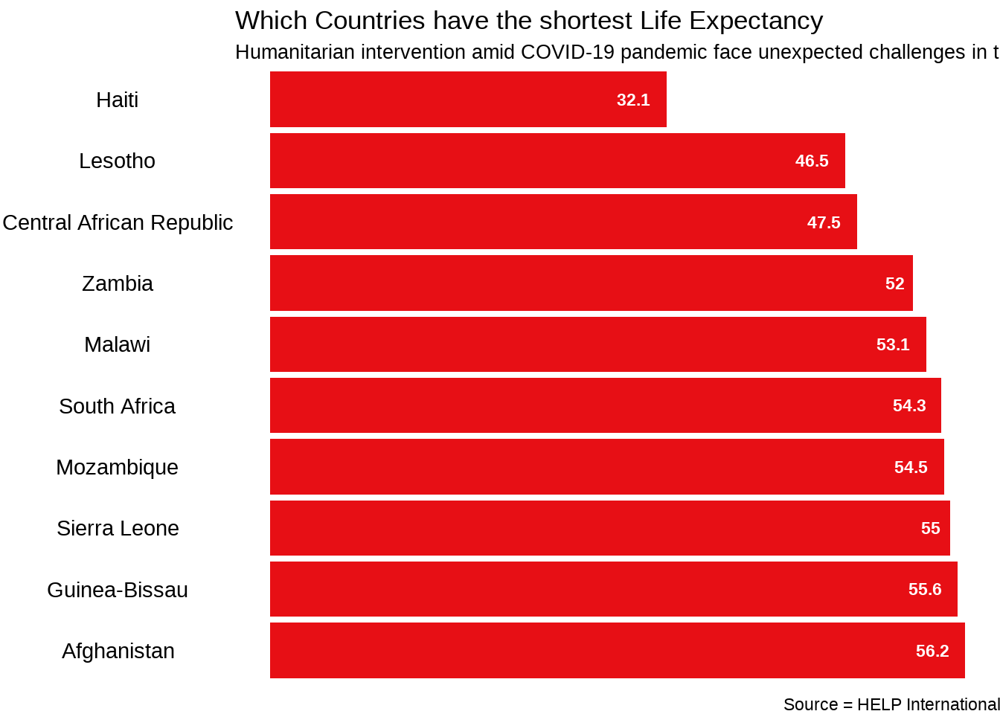
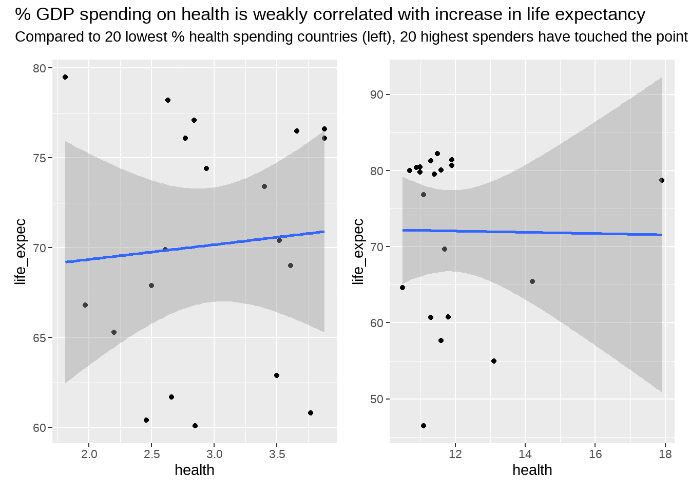

Now, we explore the data using head(). Alternatively, tail() can be used. In addition, specifying a number [e.g., head(vector, 10)] will show top 10 observations.
We use ggplot2 to create some visualizations to explore the structure of our data. For instance,
Code
country_data %>%select(country,life_expec) %>%arrange(life_expec) %>%slice(1:10) %>%ggplot(aes(x =reorder(country, -life_expec), y = life_expec)) +geom_bar(stat ='identity',width =0.4) +theme_void() +geom_col(fill =c("#E70F15")) +geom_text(aes(label = life_expec), size =3,fontface ='bold', hjust =1.5,color ='white') +theme(axis.text.y =element_text(),plot.subtitle =element_text(size =10) ) +labs(title ='Which Countries have the shortest Life Expectancy',subtitle ='Humanitarian intervention amid COVID-19 pandemic face unexpected challenges in these countries with already low life spans',x =element_blank(),y ='Life Span in years',caption ='Source = HELP International') +coord_flip()

How much are bottom 20 countries by gdpp spending on health?
If COVID-19 interventions were to aim to increase % health spending in lower spending countries, how will it impact life expectancy?
We compare 20 lowest % GDP spenders on health with the top 20 % GDP spenders on health.
Code
country_data %>%select(country, health, life_expec) %>%arrange(health) %>%slice(1:20) %>%ggplot(aes(health, life_expec)) +geom_point() +geom_smooth(method = lm) -> p3country_data %>%select(country, health, life_expec) %>%arrange(desc(health)) %>%slice(1:20) %>%ggplot(aes(health, life_expec)) +geom_point() +geom_smooth(method = lm) -> p4p3 + p4 +plot_annotation('% GDP spending on health is weakly correlated with increase in life expectancy', subtitle ='Compared to 20 lowest % health spending countries (left), 20 highest spenders have touched the point of diminishing return')
`geom_smooth()` using formula = 'y ~ x'
`geom_smooth()` using formula = 'y ~ x'

Source Code
---title: "Humanitarian Data"format: html: code-fold: true code-tools: trueeditor_options: chunk_output_type: console---### Visualizing Humanitarian DataThis document includes code on visualizing the aid that landed in "backward" countries during the COVID-19 pandemic.### Data:Data comes from Kaggle.### Libraries```{r results='hide'}library(tidyverse)library(xda) # a good package for data explorationlibrary(hrbrthemes)library(ggthemes)library(ggplot2)library(patchwork)library(thematic)``````{r echo = TRUE}country_data <-read.csv("C:\\Users\\HP\\Downloads\\archive\\Country-data.csv", stringsAsFactors = F)```Now, we explore the data using head(). Alternatively, tail() can be used. In addition, specifying a number \[e.g., head(vector, 10)\] will show top 10 observations.```{r}head(country_data)```It is a good practice to observe the type of data using str().```{r}str(country_data)```Descriptive statistics also give a good picture of what we're dealing with.```{r}numSummary(country_data)```### Exploratory visualizationsWe use ggplot2 to create some visualizations to explore the structure of our data. For instance,```{r}country_data %>%select(country,life_expec) %>%arrange(life_expec) %>%slice(1:10) %>%ggplot(aes(x =reorder(country, -life_expec), y = life_expec)) +geom_bar(stat ='identity',width =0.4) +theme_void() +geom_col(fill =c("#E70F15")) +geom_text(aes(label = life_expec), size =3,fontface ='bold', hjust =1.5,color ='white') +theme(axis.text.y =element_text(),plot.subtitle =element_text(size =10) ) +labs(title ='Which Countries have the shortest Life Expectancy',subtitle ='Humanitarian intervention amid COVID-19 pandemic face unexpected challenges in these countries with already low life spans',x =element_blank(),y ='Life Span in years',caption ='Source = HELP International') +coord_flip() ```How much are bottom 20 countries by gdpp spending on health?```{r echo=FALSE}p1 <- country_data %>%select(gdpp, health) |>arrange(gdpp) |>slice(1:20) |>ggplot(aes(health)) +geom_boxplot()labs(x ='% of GDP',y =element_blank())p2 <- country_data %>%select(gdpp, health) |>arrange(desc(gdpp)) |>slice(1:20) |>ggplot(aes(health)) +geom_boxplot() +labs(x ='% of GDP',y =element_blank())# combining plots using patchworkp1 + p2 +plot_annotation('How do countries with lowest and highest GDPP relate in Health Spending?', subtitle ='Top 20 countries on the left; bottom 20 countries on the right',theme=theme(plot.title=element_text(hjust=0)))```If COVID-19 interventions were to aim to increase % health spending in lower spending countries, how will it impact life expectancy?We compare 20 lowest % GDP spenders on health with the top 20 % GDP spenders on health.```{r}country_data %>%select(country, health, life_expec) %>%arrange(health) %>%slice(1:20) %>%ggplot(aes(health, life_expec)) +geom_point() +geom_smooth(method = lm) -> p3country_data %>%select(country, health, life_expec) %>%arrange(desc(health)) %>%slice(1:20) %>%ggplot(aes(health, life_expec)) +geom_point() +geom_smooth(method = lm) -> p4p3 + p4 +plot_annotation('% GDP spending on health is weakly correlated with increase in life expectancy', subtitle ='Compared to 20 lowest % health spending countries (left), 20 highest spenders have touched the point of diminishing return')```